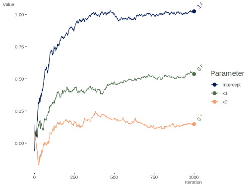
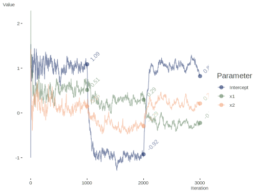

Stochastic Gradient Descent
Here we have ‘online’ learning via stochastic gradient descent. See also, standard gradient descent In the following, we have basic data for standard regression, but in this ‘online’ learning case, we can assume each observation comes to us as a stream over time rather than as a single batch, and would continue coming in. Note that there are plenty of variations of this, and it can be applied in the batch case as well. Currently no stopping point is implemented in order to trace results over all data points/iterations.
On revisiting this much later, I thought it useful to add that I believe this was motivated by the example in Murphy’s Probabilistic Machine Learning. I also made some cleanup to my original code, added some comments, but mostly left it as it was.
Data Setup
Stochastic Gradient Descent Algorithm
sgd = function(
par, # parameter estimates
X, # model matrix
y, # target variable
stepsize = 1, # the learning rate
stepsizeTau = 0, # if > 0, a check on the LR at early iterations
average = FALSE
){
# initialize
beta = par
names(beta) = colnames(X)
betamat = matrix(0, nrow(X), ncol = length(beta)) # Collect all estimates
fits = NA # fitted values
s = 0 # adagrad per parameter learning rate adjustment
loss = NA # Collect loss at each point
for (i in 1:nrow(X)) {
Xi = X[i, , drop = FALSE]
yi = y[i]
LP = Xi %*% beta # matrix operations not necessary,
grad = t(Xi) %*% (LP - yi) # but makes consistent with the standard gd R file
s = s + grad^2
beta = beta - stepsize * grad/(stepsizeTau + sqrt(s)) # adagrad approach
if (average & i > 1) {
beta = beta - 1/i * (betamat[i - 1, ] - beta) # a variation
}
betamat[i,] = beta
fits[i] = LP
loss[i] = (LP - yi)^2
}
LP = X %*% beta
lastloss = crossprod(LP - y)
list(
par = beta, # final estimates
parvec = betamat, # all estimates
loss = loss, # observation level loss
RMSE = sqrt(sum(lastloss)/nrow(X)),
fitted = fits
)
}Run
Set starting values.
For any particular data you might have to fiddle with the stepsize, perhaps
choosing one based on cross-validation with old data.
sgd_result = sgd(
init,
X = X,
y = y,
stepsize = .1,
stepsizeTau = .5,
average = FALSE
)
str(sgd_result)List of 5
$ par : num [1:3, 1] 1.024 0.537 0.148
..- attr(*, "dimnames")=List of 2
.. ..$ : chr [1:3] "Intercept" "x1" "x2"
.. ..$ : NULL
$ parvec: num [1:1000, 1:3] -0.06208 -0.00264 0.04781 0.09866 0.08242 ...
$ loss : num [1:1000] 0.67 1.261 1.365 2.043 0.215 ...
$ RMSE : num 1.01
$ fitted: num [1:1000] 0 -0.0236 -0.0446 -0.2828 0.1634 ... [,1]
Intercept 1.0241049
x1 0.5368198
x2 0.1478470Comparison
We can compare to standard linear regression.
# summary(lm(y ~ x1 + x2))
coef1 = coef(lm(y ~ x1 + x2))
rbind(
sgd_result = sgd_result$par[, 1],
lm = coef1
) Intercept x1 x2
sgd_result 1.024105 0.5368198 0.1478470
lm 1.029957 0.5177020 0.1631026Visualize Estimates
library(tidyverse)
gd = data.frame(sgd_result$parvec) %>%
mutate(Iteration = 1:n())
gd = gd %>%
pivot_longer(cols = -Iteration,
names_to = 'Parameter',
values_to = 'Value') %>%
mutate(Parameter = factor(Parameter, labels = colnames(X)))
ggplot(aes(
x = Iteration,
y = Value,
group = Parameter,
color = Parameter
),
data = gd) +
geom_path() +
geom_point(data = filter(gd, Iteration == n), size = 3) +
geom_text(
aes(label = round(Value, 2)),
hjust = -.5,
angle = 45,
size = 4,
data = filter(gd, Iteration == n)
) +
theme_minimal()
Data Set Shift
This data includes a shift of the previous data.
set.seed(1234)
n2 = 1000
x1.2 = rnorm(n2)
x2.2 = rnorm(n2)
y2 = -1 + .25*x1.2 - .25*x2.2 + rnorm(n2)
X2 = rbind(X, cbind(1, x1.2, x2.2))
coef2 = coef(lm(y2 ~ x1.2 + x2.2))
y2 = c(y, y2)
n3 = 1000
x1.3 = rnorm(n3)
x2.3 = rnorm(n3)
y3 = 1 - .25*x1.3 + .25*x2.3 + rnorm(n3)
coef3 = coef(lm(y3 ~ x1.3 + x2.3))
X3 = rbind(X2, cbind(1, x1.3, x2.3))
y3 = c(y2, y3)Run
sgd_result2 = sgd(
init,
X = X3,
y = y3,
stepsize = 1,
stepsizeTau = 0,
average = FALSE
)
str(sgd_result2)List of 5
$ par : num [1:3, 1] 0.821 -0.223 0.211
..- attr(*, "dimnames")=List of 2
.. ..$ : chr [1:3] "Intercept" "x1" "x2"
.. ..$ : NULL
$ parvec: num [1:3000, 1:3] -1 -0.119 0.624 1.531 1.063 ...
$ loss : num [1:3000] 0.67 2.31 3.69 30.99 10.58 ...
$ RMSE : num 1.57
$ fitted: num [1:3000] 0 -0.421 -0.797 -4.421 2.952 ...Comparison
Compare with lm for each data part.
[,1] [,2] [,3]
[1,] 1.0859378 0.5128904 0.1457697
[2,] -0.9246994 0.2945723 -0.2941759
[3,] 0.8213521 -0.2229918 0.2112883 (Intercept) x1 x2
coef1 1.0299573 0.5177020 0.1631026
coef2 -0.9700427 0.2677020 -0.2868974
coef3 1.0453166 -0.2358521 0.2418489Visualize Estimates
Visualize estimates.
gd = data.frame(sgd_result2$parvec) %>%
mutate(Iteration = 1:n())
gd = gd %>%
pivot_longer(cols = -Iteration,
names_to = 'Parameter',
values_to = 'Value') %>%
mutate(Parameter = factor(Parameter, labels = colnames(X)))
ggplot(aes(x = Iteration,
y = Value,
group = Parameter,
color = Parameter
),
data = gd) +
geom_path() +
geom_point(data = filter(gd, Iteration %in% c(n, n + n2, n + n2 + n3)),
size = 3) +
geom_text(
aes(label = round(Value, 2)),
hjust = -.5,
angle = 45,
data = filter(gd, Iteration %in% c(n, n + n2, n + n2 + n3)),
size = 4,
show.legend = FALSE
) +
theme_minimal()
Source
Base R source code found at https://github.com/m-clark/Miscellaneous-R-Code/blob/master/ModelFitting/stochastic_gradient_descent.R